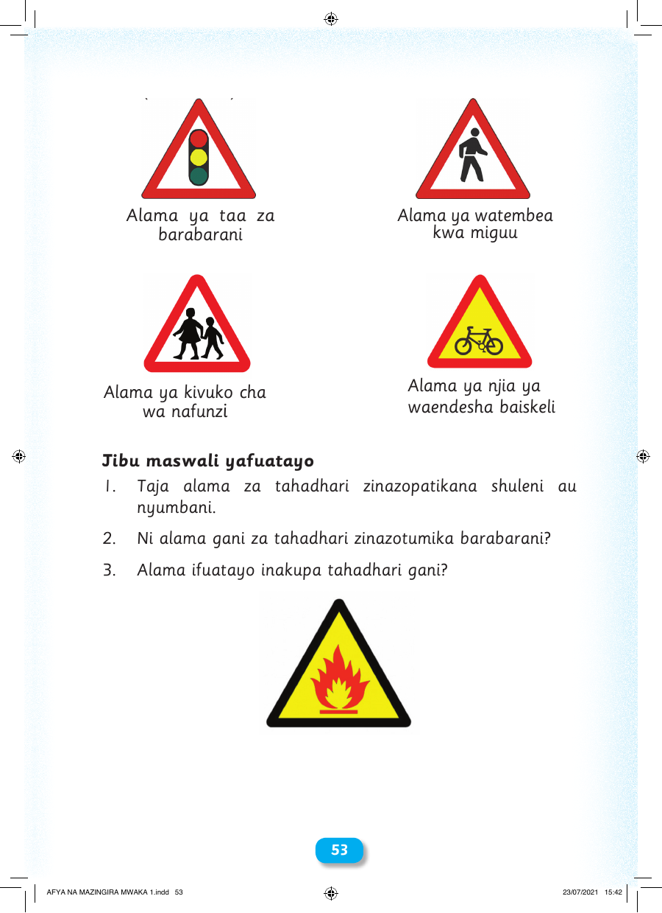

Alama ya taa za Alama ya watembea barabarani kwa miguu Alama ya njia ya Alama ya kivuko cha wa nafunzi waendesha baiskeli Jibu maswali yafuatayo 1. Taja alama za tahadhari zinazopatikana shuleni au nyumbani. 2. Ni alama gani za tahadhari zinazotumika barabarani? 3. Alama ifuatayo inakupa tahadhari gani? 5533 AFYA NA MAZINGIRA MWAKA 1.indd 53 23/07/2021 15:42